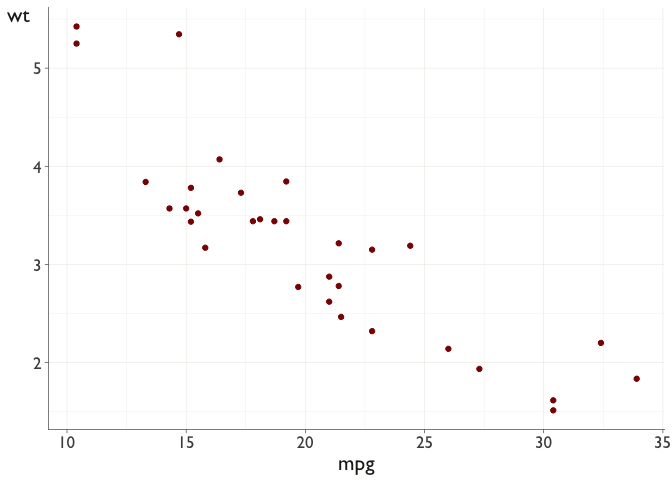
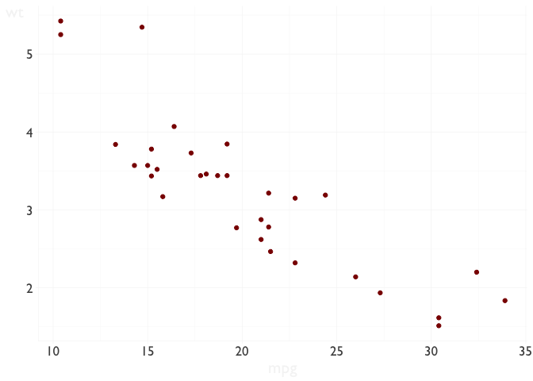

This is a small package containing functions for producing consistent documents and figures for scientific reports.
Installation
You can install pmthemes() from github with:
# install.packages("devtools") devtools::install_github("petermacp/pmthemes")
Overall theme
The theme_pm() function is the workhorse of the package, providing a simple theme for scientific presentations and documents.
library(ggplot2) library(palmerpenguins) library(pmthemes) ggplot(data = penguins, aes(x = flipper_length_mm, y = body_mass_g)) + geom_point(aes(color = species, shape = species), size = 2) + facet_grid(~species) + scale_color_manual(values = c("darkorange","darkorchid","cyan4")) + labs(title = "This is a test graph", subtitle = "Showing theme_pm()", caption = "Data from the palmerpenguins package") + theme_pm() #> Warning: Removed 2 rows containing missing values (geom_point).

Vintage rail poster colour themes
The scale_colour_rail() and scale_fill_rail() functions are used to define colour palettes for aesthetics specified in the scale name.
Much of the code for extracting colour palettes from images using a k-means clustering images was taken from: http://www.milanor.net/blog/build-color-palette-from-image-with-paletter/
There are seven different palettes, each based on a vintage British railway poster:


Examples
An example using the cornwall palette.
library(ggplot2) library(pmthemes) ggplot(data = diamonds) + geom_bar(aes(x = cut, fill = cut)) + theme_pm() + scale_fill_rail(palette="cornwall")

Here is the harrogate palette.
library(ggplot2) library(pmthemes) ggplot(data = diamonds) + geom_bar(mapping = aes(x = cut, fill = cut)) + theme_pm() + scale_fill_rail(palette="harrogate")

…and the penzance palette.
ggplot(data = diamonds) + geom_bar(mapping = aes(x = cut, fill = cut)) + theme_pm() + scale_fill_rail(palette="penzance")

R Markdown template
The pmthemes package will additionally install an R Markdown template for writing scientific analysis report.
To use the package, run: library(pmthemes), then File/New File/R Markdown/From template. Then click on the Analysis template file to open a new R Markdown document.
You will need to modify the yaml header to provide your own information.